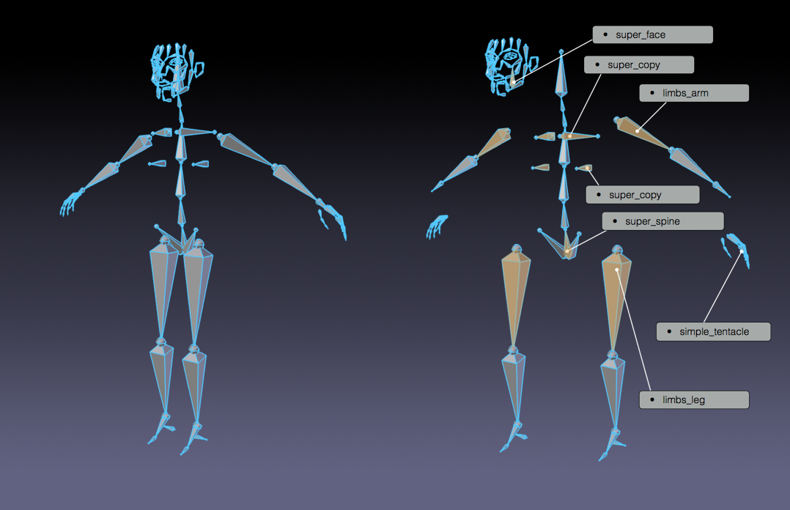
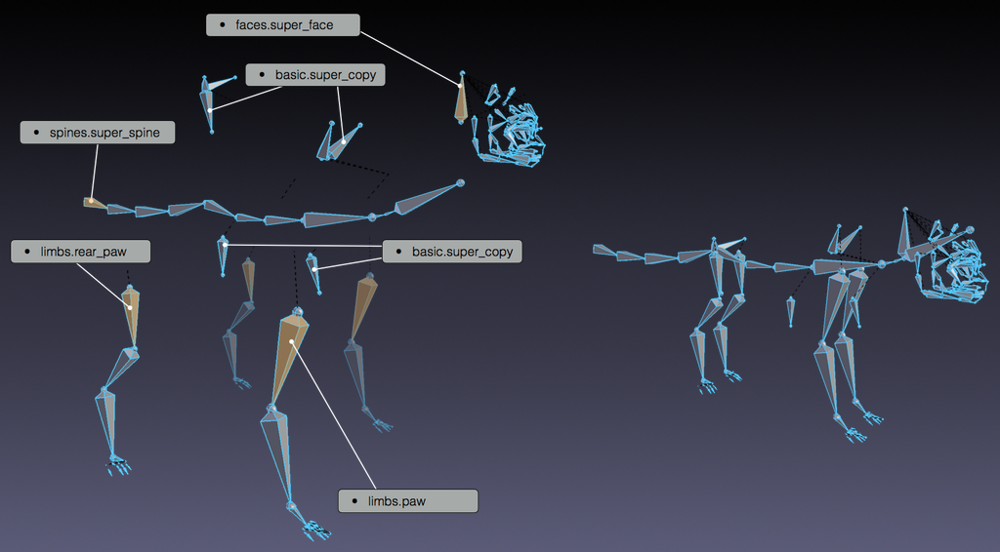
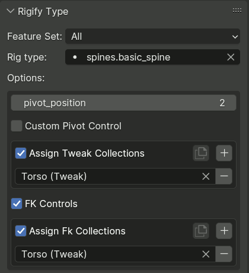
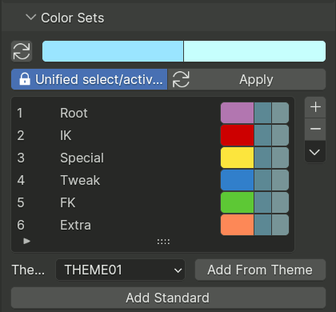
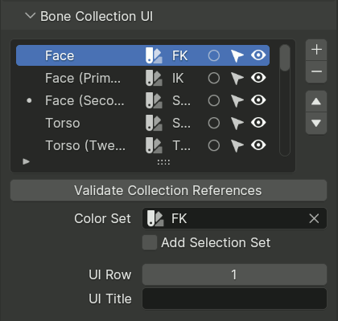
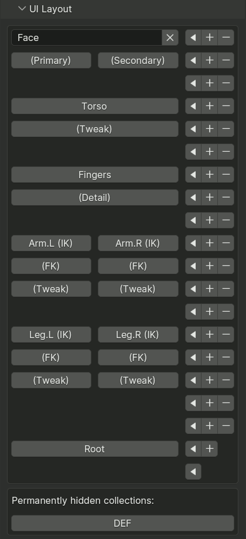
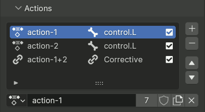
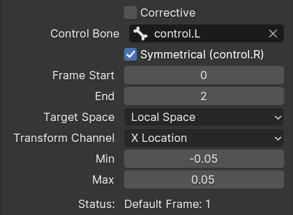
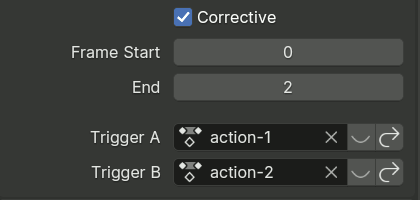

Tạo Meta-rig¶
Thêm một bone đơn từ menu .
Vào Edit Mode của armature và dựng meta-rig bằng sample hoặc các loại rig của Rigify.
Định nghĩa Rigify bone collection UI, color sets, và các selection set.
Trong phần cài đặt armature, nhấp vào nút Generate để tạo rig.
Rigify hoạt động như thế nào¶
- Meta-rig của Rigify được chia thành nhiều Sub-rig
Meta-rig là một tập hợp gồm nhiều chuỗi bone. Một chuỗi bone được nhận diện bằng thuộc tính Connected. Các chuỗi bone có thể được nối tiếp với nhau bằng cách parenting mà không dùng thuộc tính Connected (tức là dùng tùy chọn Keep Offset khi parenting).
- Một thuộc tính tùy chỉnh được đặt trên bone đầu tiên của chuỗi sub-rig
Bone đầu tiên của mỗi chuỗi bone mang một thuộc tính tùy chỉnh, đó là một custom property của Rigify dùng để nhận diện loại sub-rig. Vào lúc tạo rig, Rigify sẽ xử lý meta-rig từ bone đầu đến bone cuối của từng chuỗi để xác định những control và bone biến dạng nào sẽ được tạo.

Human meta-rig được chia theo từng sample.¶
- Meta-rig mới được tạo bằng cách lắp ghép các sample sub-rig
Vì meta-rig chỉ là một tập hợp các sub-rig nên có thể dựng những meta-rig mới bằng cách lắp ghép sub-rig theo nhiều cách khác nhau. Nhờ vậy, có thể dựng vô số meta-rig từ cùng những khối rigging.

Meta-rig con mèo được dựng bằng sample.¶
- Toàn bộ phần cơ chế, bone biến dạng và widget được tạo chỉ với một cú nhấp chuột
Meta-rig chứa nhiều thông tin hơn những bone được hiển thị. Thực tế, vào lúc tạo, Rigify sẽ nhận diện từng loại sub-rig và tùy vào các tùy chọn được chọn mà tạo ra toàn bộ các control, công tắc và bone biến dạng tinh vi chỉ với một cú nhấp chuột.
Tạo Meta-rig mới¶
Thêm một Object Armature mới¶
Tham khảo
- Mode:
Object Mode
- Menu:
- Shortcut:
Shift-A
Để tự dựng meta-rig từ đầu, bạn cần một object armature để làm việc. Chỉ cần thêm một bone đơn từ menu Add.
Mẹo
Ở giai đoạn này, đặt tên cho armature mới thêm là metarig là một ý tưởng tốt. Bạn có thể làm điều đó bất cứ lúc nào (hoặc không làm cũng được), nhưng nên làm trước khi tiếp tục để luôn rõ ràng là mình phải làm việc trên armature nào khi chỉnh sửa cấu trúc meta-rig.
Chỉnh sửa Armature¶
Giờ đã có object armature để làm việc -- với armature được chọn -- hãy vào Edit Mode của armature. Việc dựng meta-rig từ đầu trong Edit Mode có thể làm theo hai cách:
Thêm các sample rig.
Tạo các chuỗi bone.
Thêm Sample (Cơ bản)¶
Thêm các sample định nghĩa sẵn trong Edit Mode là cách tốt để bắt đầu dựng meta-rig. Cách này giúp bạn làm quen với các khối dựng có sẵn và cách chúng được dự kiến sử dụng. Để thêm một sample rig:
Chuyển đến tab armature.
Cuộn xuống panel Rigify.
Chọn một sample từ danh sách.
Nhấp vào nút Add sample.
Chỉnh sửa vị trí các bone cho khớp với nhân vật của bạn.
Để xem danh sách các sample có sẵn, xem trang Rig Types.
Dùng các loại Rig (Nâng cao)¶


Để kiểm soát hoàn toàn, bạn có thể dùng panel Rigify Type trong property của bone ở Pose Mode để gán bất kỳ loại sub-rig nào của Rigify vào bất kỳ bone nào, cũng như thay đổi các tùy chọn của nó.
Để xem danh sách các loại sub-rig có sẵn và tùy chọn của chúng, xem trang Rig Types.
Ở đầu panel có một trường chỉ định loại rig cho bone đang active. Danh sách thả xuống có thể tùy chọn được lọc theo Feature Set mà nó thuộc về.
Bên dưới đó, bạn có thể thay đổi các tùy chọn liên quan đến loại rig đã chọn, nếu loại rig đó có tùy chọn.
Tham chiếu Bone Collection¶
Một số loại rig tạo ra nhiều bone control có các tùy chọn tham chiếu đến Bone Collections. Các danh sách tham chiếu này có giao diện chuẩn với những tính năng sau:
Một ô kiểm điều khiển việc có nên dùng tham chiếu này hay không.
Một nút để sao chép nội dung danh sách tham chiếu từ bone active sang tất cả bone được chọn.
Một nút cộng để thêm tham chiếu mới vào danh sách.
Một danh sách tham chiếu, mỗi mục có một trường để chỉ định collection đích, và một nút để xóa mục đó khỏi danh sách.
Ghi chú
Mỗi sub-rig cần một số lượng bone đầu vào nhất định. Nếu bạn không chắc cách dùng các property của loại rig, hãy thêm một sample rig vào armature để xem cách sử dụng đúng.
Các property của bone được giữ lại¶
Một số property của các bone metarig thường được sao chép sang các bone control, bone biến dạng và bone cơ chế của rig đã tạo.
Tập property chính xác phụ thuộc vào sub-rig và bone được tạo cụ thể, và sub-rig có thể ghi đè một số property ngay cả khi nó giữ lại những property khác trong cùng một tập con, nhưng có một số quy luật chung:
- Cài đặt Parenting
Tập con này gồm có bone ORG parent, Use Connect, Use Inherit Rotation, Use Local Location, và Inherit Scale.
Chúng thường được sao chép sang các bone biến dạng, control FK, và trong những trường hợp khác khi sub-rig không có lý do để ghi đè hoàn toàn.
- Cài đặt Bendy Bone (Edit Mode)
Gồm có số segment, Vertex Mapping Mode, Ease In/Out, Roll In/Out, Curve In/Out và Scale In/Out.
Số segment thường bị ghi đè qua một tùy chọn sub-rig, còn các cài đặt khác thường được sao chép nguyên trạng sang các bone biến dạng.
- Cài đặt biến đổi
Gồm có chế độ xoay (rotation mode), giá trị xoay trong pose mode, và khóa kênh (channel lock).
Những cài đặt này thường được sao chép sang các control FK.
- Custom Properties
Thường được sao chép sang một trong các control được tạo dựa trên bone metarig (chủ yếu là FK). Các driver nằm trong cùng armature truy cập property này sẽ được trỏ lại đến bản sao.
- Custom Widget
Thường được sao chép sang một trong các control được tạo dựa trên bone metarig (chủ yếu là FK), và nếu được chỉ định thì sẽ ngăn việc tự động tạo widget cho bone đó.
Bone root tùy chỉnh¶
Nếu meta-rig chứa một bone tên root, bone đó sẽ được dùng làm bone control root thay vì tạo một bone mới. Điều này cho phép thay đổi vị trí rest của root bone, gán widget tùy chỉnh, hoặc thêm custom property vào bone.
Bone root tùy chỉnh phải không có parent, và phải dùng loại sub-rig basic.raw_copy hoặc không dùng loại nào.
Color Sets¶


Panel Color Sets được dùng để định nghĩa bảng màu bone cho rig hoàn thiện. Các màu trong danh sách có thể được gắn với các bone collection từ panel tương ứng.
Hai hàng trên cùng của panel Color Sets dùng để định nghĩa hành vi chung của màu bone. Thông thường các chủ đề màu dùng một dải màu chuyển để định nghĩa các trạng thái bone khác nhau: mặc định, được chọn và active. Khi nhiều chủ đề màu được dùng trong cùng một rig, việc xác định bone nào đang được chọn hoặc active có thể khó khăn vì mỗi màu sẽ có trạng thái tương ứng riêng.
Để ghi đè hành vi này, Rigify thống nhất trạng thái active và được chọn bằng cách dùng cùng một màu. Điều này được định nghĩa bởi hai giá trị:
- Unified Selected/Active Colors
Khi tùy chọn này active, việc thêm một bone group vào danh sách sẽ luôn giữ màu nhất quán. Khi một bảng màu được thêm từ một theme, bảng màu được tải nguyên trạng. Nhấp vào nút Apply để buộc hệ thống thống nhất màu được chọn và màu active.
- Selected/Active Colors
Hai trường màu này định nghĩa tương ứng màu Selected và màu Active. Theo mặc định, Rigify đọc những màu này từ theme do người dùng định nghĩa trong Preferences của Blender. Nhờ vậy màu Selected/Active luôn có hành vi dễ đoán và nhất quán trong giao diện. Màu có thể được tùy biến bằng cách nhấp vào trường màu tương ứng. Để đặt lại về giá trị theme hiện tại của Blender, chỉ cần nhấp vào nút có biểu tượng cập nhật.
Có thể thêm và xóa Color Set bằng cách nhấp vào hoặc . Toàn bộ color set có thể bị xóa cùng lúc bằng cách nhấp vào menu Specials.
Để thêm màu từ bảng màu mặc định định nghĩa sẵn của Rigify (như trong hình) vào danh sách, nhấp nút Add Standard.
Để thêm một theme cụ thể cùng bảng màu riêng của nó, chọn theme đó trong danh sách và nhấp nút Add From Theme.
Bone Collections UI¶


Bone Collections được dùng để nhóm các bone liên quan lại với nhau để có thể ẩn hoặc hiện chúng cùng lúc.
Rigify có thể tận dụng collection để tạo thêm tính năng và giao diện người dùng cho rig hoàn thiện. Một panel tên Rig Layers sẽ được tạo với các nút để ẩn các collection, sắp xếp theo bố cục trực quan.
Panel Bone Collections UI cho phép cấu hình bố cục của panel được tạo đó, cũng như chỉ định một số cài đặt khác cho bone collection, chẳng hạn như color set sẽ dùng.
Phần đầu panel là một danh sách trùng lặp với danh sách bone collection chính, nhưng hiển thị thêm các property, chẳng hạn như color set, việc collection có nút hay không, hoặc có tạo selection set hay không.
- Validate Collection References
Một số loại sub-rig có references đến bone collection trong property của chúng. Rigify dùng một lược đồ tham chiếu bền vững với việc đổi tên collection, nhưng việc xóa collection hoặc nối liền armature vẫn có thể dẫn đến tham chiếu bị hỏng.
Nút này chạy một lượt quét xác thực và chuẩn hóa mọi tham chiếu collection, báo cáo các lỗi, và giảm nguy cơ hỏng hóc do các thao tác sau đó của người dùng gây ra.
Lượt quét này cũng được thực hiện tự động mỗi lần rig được tạo.
Cảnh báo
Để tránh hỏng, thao tác này nên được dùng ngay trước và ngay sau khi nối liền hai armature metarig. Cụ thể hơn, nó phải luôn được thực hiện ở giữa thao tác đổi tên bất kỳ collection nào và thao tác nối liền.
- Color Set
Chỉ định color set để dùng cho các bone trong collection này. Nếu một bone thuộc nhiều collection, nhìn chung collection nằm trước trong danh sách sẽ có ưu tiên.
- Add Selection Set
Chỉ định việc có nên tạo một selection set cho collection này hay không.
- UI Row
Nếu khác không, chỉ định hàng nào của panel Rig Layers sẽ chứa nút điều khiển khả năng hiển thị của collection này. Khi bằng không, sẽ không có nút nào được tạo và collection bị ẩn.
- UI Title
Trường này có thể dùng để ghi đè tiêu đề hiển thị trên nút UI cho khác với tên thật của collection. Khác với tên collection, tiêu đề không cần duy nhất, nên có thể dùng để giảm sự rối rắm bằng cách dựa vào manh mối ngữ cảnh trong panel.
Panel con UI Layout¶


Panel con UI Layout cung cấp một trình soạn thảo WYSIWYG cho bố cục của panel UI được tạo (như được định nghĩa bởi các cài đặt UI Row và UI Title ở trên).
Mỗi hàng chứa ba nút ở cuối:
- Mũi tên
Di chuyển nút của collection active đến hàng này.
- Cộng
Chèn một hàng mới trước hàng hiện tại.
- Trừ
Xóa hàng hiện tại và dời tất cả các nút lên trên.
Bên trái các nút điều khiển chỉnh sửa, các hàng hiển thị các nút tương ứng với các collection, giống như UI cuối cùng, chỉ khác là thay vì ẩn/hiện, việc nhấp vào các nút này sẽ chọn collection.
Với collection active, nút chọn được thay bằng một ô nhập để chỉnh sửa UI Title, và một nút X để gỡ collection khỏi UI.
Với những collection chưa được gán vào UI, nút chọn của chúng được hiển thị trong một khu vực riêng ở cuối panel con.
Collection Root sẽ được thêm và/hoặc gán nút UI tự động nếu cần khi rig được tạo. Nếu muốn, có thể thủ công gán nút UI cho các collection nội bộ ORG, DEF và MCH.
Mẹo
Các hàng trống xuất hiện mỏng hơn nhiều trong giao diện cuối cùng vì chúng không phải chứa nút chỉnh sửa, và có thể dùng làm vách phân cách logic.
Actions¶


Constraint Action cho phép áp các dáng (pose) do một action định nghĩa lên các bone dựa trên phép biến đổi của một bone khác. Điều này đòi hỏi thêm constraint vào mọi bone chịu ảnh hưởng bởi action, rất mất công. Vì lý do đó, Rigify kèm một hệ thống để tự động làm việc này qua panel Actions.
Panel này định nghĩa danh sách các action sẽ được áp lên các bone của rig đã tạo. Mỗi action chỉ được liệt kê một lần duy nhất.
Các mục trong danh sách hiển thị tên action, bộ kích hoạt (một bone hoặc một action hiệu chỉnh được điều khiển bởi hai action khác), và một ô kiểm dùng để tạm thời vô hiệu việc áp action này lên rig. Biểu tượng đầu mỗi mục được đổi từ biểu tượng action sang biểu tượng liên kết để làm nổi bật các action hiệu chỉnh phụ thuộc vào action thường đang active, hoặc các action thường được dùng bởi action hiệu chỉnh đang active.
Ghi chú
Các constraint Action được thêm vào bone theo thứ tự sao cho tái hiện chính xác deformation dự kiến, với giả định các action được tạo (tạo dáng và keyframe) theo thứ tự liệt kê.
Normal Actions¶


Normal action được áp dựa trên phép biến đổi của một bone control cụ thể từ rig đã tạo. Chúng có các property sau:
- Control Bone
Chỉ định bone điều khiển action.
- Symmetrical
Nếu bone control có hậu tố cho biết nó thuộc bên trái hay bên phải, có thể bật tùy chọn này để tự động áp dụng đối xứng.
Khi được bật, các bone bên trái được keyframe trong action sẽ do control bên trái điều khiển, còn các bone bên phải do control bên phải điều khiển. Các bone không có hậu tố bên được coi là thuộc phần giữa nhân vật. Chúng được rig bằng hai constraint Action có influence 0.5, mỗi cái do một bone control điều khiển.
- Frame Start & End
Chỉ định khoảng frame của action sẽ được dùng bởi các constraint được tạo.
- Target Space, Transform Channel
Chỉ định không gian tọa độ và kênh biến đổi của bone đích cần dùng.
- Min, Max
Chỉ định khoảng giá trị của kênh biến đổi được ánh xạ sang khoảng frame của action đã chỉ định.
- Default Frame
Hiển thị frame trong action tương ứng với giá trị trung tính (1 đối với scale, còn không thì 0) của kênh biến đổi, được tính từ các giá trị khoảng đã chỉ định.
Corrective Actions¶


Corrective action được áp dựa trên tiến độ của hai action khác trong danh sách, và được dùng để cải thiện dáng khi chúng được dùng cùng nhau.
- Frame Start & End
Chỉ định khoảng frame của action sẽ được dùng bởi các constraint được tạo.
- Trigger A & B
Chỉ định hai action điều khiển việc hiệu chỉnh. Các hàng giao diện chứa các nút để hiển thị cài đặt của action đó, hoặc nhảy đến nó trong danh sách.
Tiến độ của corrective action từ frame đầu đến frame cuối được tính bằng tích của giá trị tiến độ của hai action kích hoạt. Như vậy, frame đầu được áp khi một trong hai action kích hoạt ở frame đầu, và frame cuối được dùng khi cả hai đều ở frame cuối của chúng.
Corrective action phải nằm dưới các action kích hoạt của nó trong danh sách, và điều này được đảm bảo qua một sắp xếp lại ngầm định ngay cả khi bị vi phạm.
Mẹo
Corrective action hoạt động trực quan nhất khi cả hai action kích hoạt đều có Default Frame bằng Start Frame. Để tạo một corrective action trong trường hợp này:
Tạo hai action kích hoạt, thêm chúng vào panel và tạo rig.
Tạo dáng các control của bạn sao cho cả hai action kích hoạt đều được kích hoạt hoàn toàn đến frame cuối.
Tạo dáng và keyframe các hiệu chỉnh cần thiết ở frame cuối của action mới, đồng thời key frame đầu với các giá trị trung tính.
Thêm action mới tạo vào cuối danh sách trong panel và cấu hình cài đặt của nó.